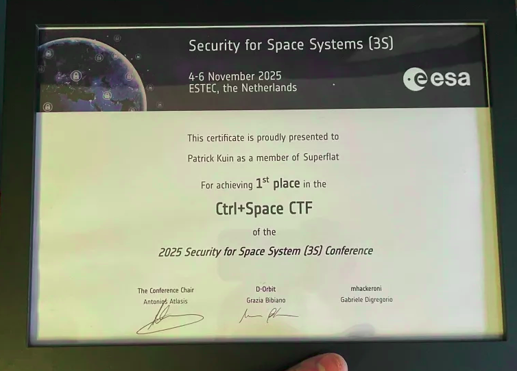
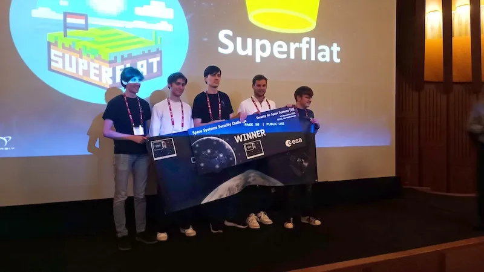

Ctrl+Space CTF Finals Winners
Finals held at ESTEC / 3S Conference November 4–6, 2025
Competition Overview
Timeline Qualification & In-Orbit Finals
Qualification Event
The qualifier was an online Jeopardy-style contest running 24 hours from September 20, 09:00 UTC to September 21, 09:00 UTC. Teams solved challenges across crypto, reversing, radio, web security, space systems, pwn and more. The top five teams from the qualifier were invited to the live finals based on scoreboard ranking.
In-Orbit Finals
The finals took place in-person at ESTEC (European Space Research and Technology Centre) during the 3S Conference (Nov 4-6, 2025). Finalists competed in live challenges involving a target space system scheduled contact windows with an in-orbit satellite and ground-based scenarios. If live interaction was not possible, the event used a simulated environment.
Finals Highlights
There was a King-of-the-Hill (KoTH) style challenge where each team had a spaceship and a base station; the objective was to be the last team standing to earn the most points. Our team won the KoTH in the finals.
The Jeopardy track featured space-math and in-orbit challenges where teams scheduled payload delivery windows to real satellites a unique and memorable experience. The ESA research centre at ESTEC provided an incredible venue for the finals. There were a lot of hard challenges, and the opportunity to work with real space systems made this CTF truly special.

